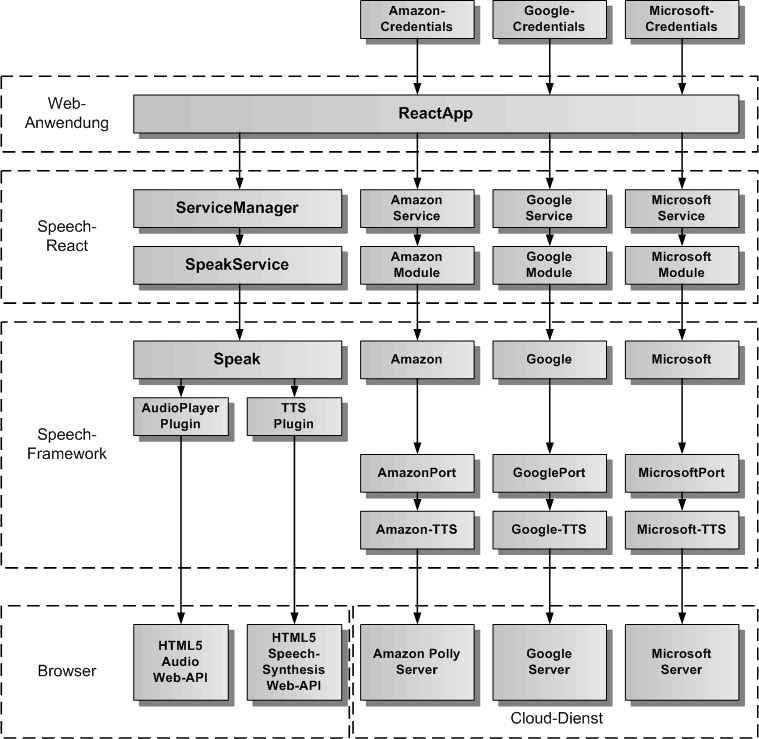
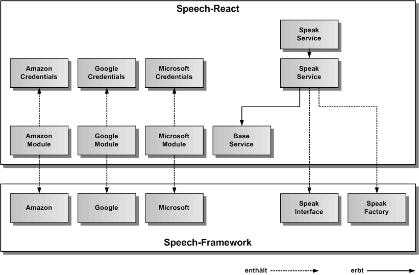
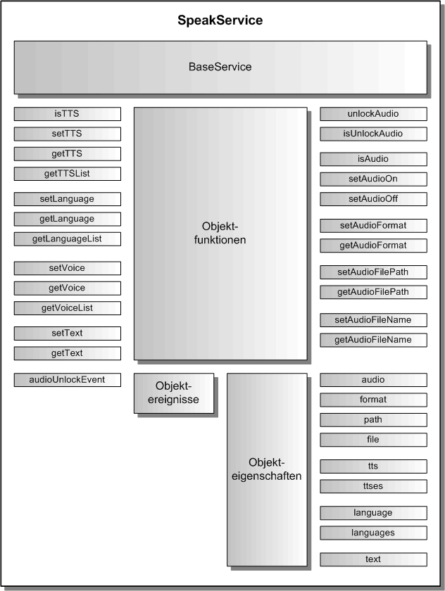

SpeakService
Der SpeakService dient zur Sprachsynthese von Texten und zum Abspielen von Audiosprachdateien. Für die Sprachsynthese wird das HTML5 SpeechSynthesis Web-API verwendet. Es kann auch der Amazon Cloud-Service verwendet werden. Für das Abspielen der Audiodateien wird das HTML5 Audio Web-API verwendet. Der gesamte Code läuft komplett im Browser. Der SpeakService erbt vom abstrakten BaseService.
Architektur
In der folgenden Grafik werden die einzelnen Schichten, angefangen von der ReactApp, über den ServiceManager und den SpeakService von Speech-React, die Speak-Komponente in Speech-Framework, die Plugins für TTS (Text-to-Speech) und AudioPlayer, bis hinunter zu den Standardschnittstellen des Browsers für SpeechSynthesis und Audio, sowie dem Amazon Polly Server Google Server und Microsoft Server, dargestellt.

Ganz oben sind die für den SpeakService notwendigen Credentials dargestellt, die der ReactApp übergeben werden müssen, wenn ein Cloud-Dienst als TTS zum Einsatz kommen soll. Eine Anleitung für die Erstellung der Credentials und die Einbindung der Cloud-Module in die ReactApp zur Aktivierung des jeweiligen Cloud-Service findet man unter docs/cloud/Cloud.md
Die nächste Grafik zeigt die konkrete Vererbungsbeziehung zu BaseService, sowie die Einbindung von SpeakFactory und SpeakInterface aus dem Speech-Framework. SpeakFactory ist eine statische Klasse und erzeugt das Speak-Objekt zum SpeakInterface. Auf der linken Seite sind die Cloud-Module dargestellt, welche als statische Klassen implementiert sind und die Cloud-Singletons (Amazon, Google und Microsoft) aus dem Speech-Framework einbinden. Damit die Cloud-Dienste funktionieren, müssen die Credentials von den Cloud-Modulen an die Cloud-Singletons weitergereicht werden.

API
Der SpeakService definiert die öffentliche Schnittstelle von Speech-React für die Sprachausgabe. Die folgende Grafik zeigt einen Überblick über die gesamte API des SpeakServices. Die API teilt sich auf in statische Klassenfunktionen, Objektfunktionen, Objektereignisse und Objekteigenschaften. Die API verfügt über eine auf Funktionen und eine auf Eigenschaften basierende Schnittstelle. Die gleiche Aufgabe kann über Funktionsaufrufe oder über das Setzen von Eigenschaften erledigt werden. Z.B. kann der zu sprechende Text entweder mit speakService.setText('Dies ist ein Text') oder mit speakService.text = 'Dies ist ein Text' eingetragen werden, bevor mit speakService.start() die Sprachausgabe gestartet wird.

Importieren
Um den SpeakService importieren zu können, muss in der jeweiligen Komponente folgende Zeile eingefügt werden:
import { SPEECH_SEPAK_SERVICE, ServiceManager, SpeakService } from 'speech-react'
Dazu müssen das Spech-Framework und das Speech-React npm-Paket in der gleichen Version vorher ins eigene ReactApp-Projekt kopiert und installiert worden sein.
$ npm install speech-framework-<version>.tgz
$ npm install speech-react-<version>.tgz
Alternativ kann man Speech-React aus dem globalen NPM-Repository installieren. Dann wird Speech-Framework automatisch mitinstalliert.
$ npm install speech-react
Konfiguration
Dier erste Aufgabe vor Nutzung des SpeakService besteht in der Festlegung der Konfiguration vor der Erzeugung des Services in React. In der Defaulteinstellung wird die init()-Funktion im Konstruktor aufgerufen und die voreingestellte Konfiguration übernommen. Will man die Defaultkonfiguration überschreiben, holt man sie sich mittels der Klassenfunktion SpeakService.getConfig(). Diese Funktion gibt das SpeakConfig-Objekt des SpeakServices zurück.
Auszug aus der Datei: src/speech/speak/speak-service-config.ts:
// hier sind die Defaultwerte des SpeakService festgelegt
export const SpeakServiceConfig: SpeakServiceOptionInterface = {
/** ein/ausschalten der Speak-Komponente */
activeFlag: true,
/** setzt die Sprache fuer die Sprachausgabe ( 'de', 'en' )*/
speakLanguage: 'de',
/** Audioformat 'mp3' oder 'wav' */
audioFormat: 'mp3',
/** lokales Verzeichnis, in dem die Audiodateien liegen, z.B. 'assets/speech/audio/' */
audioFilePath: 'assets/',
/** True, wenn Audiodateien abgespielt werden sollen, anstelle der Sprachsynthese */
audioFlag: false,
/** legt fest, ob die Fehlermeldungen zusaetzlich auf der Konsole ausgegeben werden */
errorOutputFlag: false
};
Sprachausgabe
Um Sprache auszugeben, müssen zuerst die Sprache und dann der auszugebende Text festgelegt werden. Hier hat man die Wahl zwischen den Funktionen zum Eintragen der Werte, oder den Eigenschaften. Die Sprache kann auch in der Konfiguration mit dem Parameter speakLanguage eingetragen werden. Es gibt zwei Konstanten für die Sprache Deutsch ('de') und Englisch ('en'), die immer verwendet werden sollten, wenn man die Sprache eintragen will. Hat man diese Werte eingetragen kann man die Sprachausgabe mit speakService.start() beginnen und mit speakService.stop() wieder beenden. Alternativ kann man auch die Sprachausgabe sich selbst beenden lassen. Nach dem Start der Sprachausgabe erhält man das Ereignis startEvent und nach dem Ende der Sprachausgabe das Ereignis stopEvent. Falls ein Fehler auftritt, erhält man das Ereignis errorEvent.
Beispiel-Komponente für die Integration von Sprache:
import React from 'react';
// SpeakService
import { SPEECH_SPEAK_SERVICE, ServiceManager, SpeakService, SPEAK_DE_LANGUAGE, SPEAK_EN_LANGUAGE } from 'speech-react';
export class SpeakComponent extends React.Component {
speakService: SpeakService = null;
speakStartEvent = null;
speakStopEvent = null;
speakErrorEvent = null;
constructor() {
this.speakService = ServiceManager.get( SPEECH_SPEAK_SERVICE );
}
// Speak-Ereignisse eintragen
componentDidMount() {
this.speakStartEvent = speakService.startEvent.subscribe(() => console.log('Sprachausgabe gestartet'));
this.speakStopEvent = speakService.stopEvent.subscribe(() => console.log('Sprachausgabe beendet'));
this.speakErrorEvent = speakService.errorEvent.subscribe(aError => console.log('Sprachausgabe Fehler:', aError.message));
}
// Speak-Ereignisse freigeben
componentWillUnmount() {
this.speakStartEvent.unsubscribe();
this.speakStopEvent.unsubscribe();
this.speakErrorEvent.unsubscribe();
}
// eigene Funktionen fuer die Sprachausgabe in einer eigenen React-Komponente
speakGerman( aText: string ) {
this.speakService.language = SPEAK_DE_LANGUAGE;
this.speakService.text = aText;
this.speakService.start();
}
speakEnglish( aText: string ) {
this.speakService.language = SPEAK_EN_LANGUAGE;
this.speakService.text = aText;
this.speakService.start();
}
speakStop() {
this.speakService.stop();
}
render() {
return (
<div>
<button onclick="speakGerman('Dies ist ein Text')">
Sprachausgabe starten
</button>
<button onclick="speakStop()">
Sprachausgabe stoppen
</button>
</div>
);
}
}
Audiowiedergabe
Die Audiowiedergabe verwendet vorgefertigte Audiosprachdateien für die Sprachausgabe. Dies kann verwendet werden, um eine ReactApp mit Sprachausgaben auszustatten, die keinen Zugriff auf die Sprachsynthese hat. Dies trifft vor allem für mobile Geräte zu. Ein weiterer Vorteil ist die Unabhängigkeit vom Internet, da die Audiodateien lokal in der ReactApp gespeichert werden können. Um Audiodateien abspielen zu können, muss der SpeakService zuerst in den Audiomodus umgeschaltet werden. Dies wird mit der Funktion speakService.setAudioOn() durchgeführt. Alternativ kann man auch die Audioeigenschaft verwenden und speakService.audio = true setzen. Der Audiomodus kann auch in der Konfiguration mit audioFlag auf true gesetzt werden. Neben dem Audiomodus müssen noch das Audiodateienformat, das Audiodateienverzeichnis und der Audiodateiname vor dem Abspielen einer Audiosprachdatei festgelegt werden. Das Audiodateiformat und das Audiodateiverzeichnis lassen sich über audioFormat und audioFilePath in der Konfiguration bereits setzen. Als Audioformat gibt es 'mp3' und 'wav'. Der Audiodateiname wird immer vor dem Abspielen der Audiosprachdatei eingetragen.
Beispiel-Komponente für die Integration von Sprache:
import React from 'react';
// SpeakService
import { SPEECH_SPEAK_SERVICE, ServiceManager, SpeakService, SPEAK_DE_LANGUAGE, SPEAK_EN_LANGUAGE } from 'speech-react';
export class SpeakComponent extends React.Component {
speakService: SpeakService = null;
speakStartEvent = null;
speakStopEvent = null;
speakErrorEvent = null;
constructor() {
this.speakService = ServiceManager.get( SPEECH_SPEAK_SERVICE );
}
// Speak-Ereignisse eintragen
componentDidMount() {
this.speakStartEvent = speakService.startEvent.subscribe(() => console.log('Sprachausgabe gestartet'));
this.speakStopEvent = speakService.stopEvent.subscribe(() => console.log('Sprachausgabe beendet'));
this.speakErrorEvent = speakService.errorEvent.subscribe(aError => console.log('Sprachausgabe Fehler:', aError.message));
// setzen von Audiodateiformat und Audiodateiverzeichnis
this.speakService.format = 'mp3';
this.speakService.path = 'assets/speech/audio/';
// setzen des Audiomodus
this.speakService.audio = true;
}
// Speak-Ereignisse freigeben
componentWillUnmount() {
this.speakStartEvent.unsubscribe();
this.speakStopEvent.unsubscribe();
this.speakErrorEvent.unsubscribe();
// loeschen des Audiomodus
this.speakService.audio = false;
}
// eigene Funktionen fuer die Wiedergabe einer Audiosprachdatei in einer eigenen Angular-Komponente
speakPlay( aFileName: string ) {
this.speakService.file = aFileName;
this.speakService.start();
}
speakStop() {
this.speakService.stop();
}
render() {
return (
<div>
<button onclick="speakPlay('AudioFile')">
Sprachausgabe starten
</button>
<button onclick="speakStop()">
Sprachausgabe stoppen
</button>
</div>
);
}
}